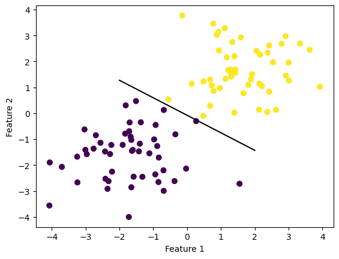
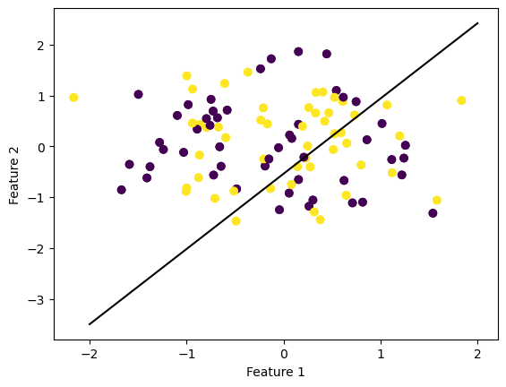

Here is a link to my source code on the GitHub repo perceptron.py.
The perceptron update is done in my perceptron.fit() function, in which I begin by modifying the features matrix X by adding a row of ones to the features matrix to ensure that the bias is taken into account in the update (as w tilde is a vector of the weights and the bias). The function begins by assigning a random weight vector, then entering into a loop as long as the maximum steps. In this loop, a random index is chosen and then the point from that index as well as its feature vector are entered into a weight update equation which updates the weight if the predicted label and actual label are different. This for loop also keeps track of the score (accuracy) throughout the iterations.
The first experiment I ran had to do with linearly separable data, to ensure that the line converges. I created a perceptron object and ran my perceptron.fit function on that object, and the line did end up converging. I printed out my accuracies, and they fluctuated (albeit barely). The accuracy did end up reaching 1.0, proving line convergence. This code (and output) can be observed below.
%load_ext autoreload%autoreload 2from perceptron import Perceptronimport numpy as npfrom matplotlib import pyplot as pltimport pandas as pdfrom sklearn.datasets import make_blobsnp.random.seed(12345)n =100p_features =3X, y = make_blobs(n_samples =100, n_features = p_features -1, centers = [(-1.7, -1.7), (1.7, 1.7)])fig = plt.scatter(X[:,0], X[:,1], c = y)xlab = plt.xlabel("Feature 1")ylab = plt.ylabel("Feature 2")p = Perceptron()p.fit(X, y, max_steps=1000)def draw_line(w, x_min, x_max): x = np.linspace(x_min, x_max, 101) y =-(w[0]*x + w[2])/w[1] plt.plot(x, y, color ="black")fig = plt.scatter(X[:,0], X[:,1], c = y)fig = draw_line(p.w, -2, 2)xlab = plt.xlabel("Feature 1")ylab = plt.ylabel("Feature 2")
The autoreload extension is already loaded. To reload it, use:
%reload_ext autoreload
The accuracy of iteration 0 is 0.98.
The accuracy of iteration 1 is 0.98.
The accuracy of iteration 2 is 0.98.
The accuracy of iteration 3 is 0.98.
The accuracy of iteration 4 is 0.98.
The accuracy of iteration 5 is 0.98.
The accuracy of iteration 6 is 0.98.
The accuracy of iteration 7 is 0.98.
The accuracy of iteration 8 is 0.98.
The accuracy of iteration 9 is 0.98.
The accuracy of iteration 10 is 0.98.
The accuracy of iteration 11 is 0.98.
The accuracy of iteration 12 is 0.98.
The accuracy of iteration 13 is 0.98.
The accuracy of iteration 14 is 0.98.
The accuracy of iteration 15 is 0.98.
The accuracy of iteration 16 is 0.98.
The accuracy of iteration 17 is 0.98.
The accuracy of iteration 18 is 0.98.
The accuracy of iteration 19 is 0.98.
The accuracy of iteration 20 is 0.98.
The accuracy of iteration 21 is 0.98.
The accuracy of iteration 22 is 0.98.
The accuracy of iteration 23 is 0.98.
The accuracy of iteration 24 is 0.98.
The accuracy of iteration 25 is 0.98.
The accuracy of iteration 26 is 0.98.
The accuracy of iteration 27 is 0.98.
The accuracy of iteration 28 is 0.98.
The accuracy of iteration 29 is 0.98.
The accuracy of iteration 30 is 0.98.
The accuracy of iteration 31 is 0.98.
The accuracy of iteration 32 is 0.98.
The accuracy of iteration 33 is 0.98.
The accuracy of iteration 34 is 0.98.
The accuracy of iteration 35 is 0.98.
The accuracy of iteration 36 is 0.98.
The accuracy of iteration 37 is 0.98.
The accuracy of iteration 38 is 0.98.
The accuracy of iteration 39 is 0.98.
The accuracy of iteration 40 is 0.98.
The accuracy of iteration 41 is 0.98.
The accuracy of iteration 42 is 0.98.
The accuracy of iteration 43 is 0.98.
The accuracy of iteration 44 is 0.98.
The accuracy of iteration 45 is 0.98.
The accuracy of iteration 46 is 0.98.
The accuracy of iteration 47 is 0.98.
The accuracy of iteration 48 is 0.98.
The accuracy of iteration 49 is 0.98.
The accuracy of iteration 50 is 0.98.
The accuracy of iteration 51 is 0.98.
The accuracy of iteration 52 is 0.98.
The accuracy of iteration 53 is 0.98.
The accuracy of iteration 54 is 0.98.
The accuracy of iteration 55 is 0.98.
The accuracy of iteration 56 is 0.98.
The accuracy of iteration 57 is 0.98.
The accuracy of iteration 58 is 0.98.
The accuracy of iteration 59 is 0.98.
The accuracy of iteration 60 is 0.98.
The accuracy of iteration 61 is 0.98.
The accuracy of iteration 62 is 0.98.
The accuracy of iteration 63 is 0.98.
The accuracy of iteration 64 is 0.98.
The accuracy of iteration 65 is 0.98.
The accuracy of iteration 66 is 0.98.
The accuracy of iteration 67 is 0.98.
The accuracy of iteration 68 is 0.98.
The accuracy of iteration 69 is 0.98.
The accuracy of iteration 70 is 0.98.
The accuracy of iteration 71 is 0.98.
The accuracy of iteration 72 is 0.98.
The accuracy of iteration 73 is 0.98.
The accuracy of iteration 74 is 0.98.
The accuracy of iteration 75 is 0.98.
The accuracy of iteration 76 is 0.98.
The accuracy of iteration 77 is 0.98.
The accuracy of iteration 78 is 0.98.
The accuracy of iteration 79 is 0.98.
The accuracy of iteration 80 is 0.98.
The accuracy of iteration 81 is 0.98.
The accuracy of iteration 82 is 0.98.
The accuracy of iteration 83 is 0.98.
The accuracy of iteration 84 is 0.98.
The accuracy of iteration 85 is 0.98.
The accuracy of iteration 86 is 0.98.
The accuracy of iteration 87 is 0.98.
The accuracy of iteration 88 is 0.98.
The accuracy of iteration 89 is 0.98.
The accuracy of iteration 90 is 0.98.
The accuracy of iteration 91 is 0.98.
The accuracy of iteration 92 is 0.98.
The accuracy of iteration 93 is 0.98.
The accuracy of iteration 94 is 0.98.
The accuracy of iteration 95 is 0.98.
The accuracy of iteration 96 is 0.98.
The accuracy of iteration 97 is 0.98.
The accuracy of iteration 98 is 0.98.
The accuracy of iteration 99 is 0.98.
The accuracy of iteration 100 is 0.98.
The accuracy of iteration 101 is 0.98.
The accuracy of iteration 102 is 0.98.
The accuracy of iteration 103 is 0.98.
The accuracy of iteration 104 is 0.98.
The accuracy of iteration 105 is 0.98.
The accuracy of iteration 106 is 0.98.
The accuracy of iteration 107 is 0.98.
The accuracy of iteration 108 is 0.98.
The accuracy of iteration 109 is 0.98.
The accuracy of iteration 110 is 0.98.
The accuracy of iteration 111 is 0.98.
The accuracy of iteration 112 is 0.98.
The accuracy of iteration 113 is 0.98.
The accuracy of iteration 114 is 0.98.
The accuracy of iteration 115 is 0.98.
The accuracy of iteration 116 is 0.98.
The accuracy of iteration 117 is 0.98.
The accuracy of iteration 118 is 0.98.
The accuracy of iteration 119 is 0.98.
The accuracy of iteration 120 is 0.98.
The accuracy of iteration 121 is 0.98.
The accuracy of iteration 122 is 0.98.
The accuracy of iteration 123 is 0.98.
The accuracy of iteration 124 is 0.98.
The accuracy of iteration 125 is 0.98.
The accuracy of iteration 126 is 0.98.
The accuracy of iteration 127 is 0.98.
The accuracy of iteration 128 is 0.98.
The accuracy of iteration 129 is 0.98.
The accuracy of iteration 130 is 0.98.
The accuracy of iteration 131 is 0.95.
The accuracy of iteration 132 is 0.95.
The accuracy of iteration 133 is 0.95.
The accuracy of iteration 134 is 0.95.
The accuracy of iteration 135 is 0.95.
The accuracy of iteration 136 is 0.95.
The accuracy of iteration 137 is 0.95.
The accuracy of iteration 138 is 0.95.
The accuracy of iteration 139 is 0.95.
The accuracy of iteration 140 is 0.95.
The accuracy of iteration 141 is 0.97.
The accuracy of iteration 142 is 0.97.
The accuracy of iteration 143 is 0.97.
The accuracy of iteration 144 is 0.97.
The accuracy of iteration 145 is 0.97.
The accuracy of iteration 146 is 0.97.
The accuracy of iteration 147 is 0.97.
The accuracy of iteration 148 is 0.97.
The accuracy of iteration 149 is 0.97.
The accuracy of iteration 150 is 0.97.
The accuracy of iteration 151 is 0.97.
The accuracy of iteration 152 is 0.97.
The accuracy of iteration 153 is 0.97.
The accuracy of iteration 154 is 0.97.
The accuracy of iteration 155 is 0.97.
The accuracy of iteration 156 is 0.97.
The accuracy of iteration 157 is 0.98.
The accuracy of iteration 158 is 0.98.
The accuracy of iteration 159 is 0.98.
The accuracy of iteration 160 is 0.98.
The accuracy of iteration 161 is 0.98.
The accuracy of iteration 162 is 0.98.
The accuracy of iteration 163 is 0.98.
The accuracy of iteration 164 is 0.98.
The accuracy of iteration 165 is 0.98.
The accuracy of iteration 166 is 0.98.
The accuracy of iteration 167 is 0.98.
The accuracy of iteration 168 is 0.98.
The accuracy of iteration 169 is 0.98.
The accuracy of iteration 170 is 0.98.
The accuracy of iteration 171 is 0.98.
The accuracy of iteration 172 is 0.98.
The accuracy of iteration 173 is 0.98.
The accuracy of iteration 174 is 0.98.
The accuracy of iteration 175 is 0.98.
The accuracy of iteration 176 is 0.98.
The accuracy of iteration 177 is 0.98.
The accuracy of iteration 178 is 0.98.
The accuracy of iteration 179 is 0.98.
The accuracy of iteration 180 is 0.98.
The accuracy of iteration 181 is 0.98.
The accuracy of iteration 182 is 0.98.
The accuracy of iteration 183 is 0.98.
The accuracy of iteration 184 is 0.98.
The accuracy of iteration 185 is 0.98.
The accuracy of iteration 186 is 0.98.
The accuracy of iteration 187 is 0.98.
The accuracy of iteration 188 is 0.98.
The accuracy of iteration 189 is 0.98.
The accuracy of iteration 190 is 0.98.
The accuracy of iteration 191 is 0.98.
The accuracy of iteration 192 is 0.98.
The accuracy of iteration 193 is 0.98.
The accuracy of iteration 194 is 0.98.
The accuracy of iteration 195 is 0.98.
The accuracy of iteration 196 is 0.98.
The accuracy of iteration 197 is 0.98.
The accuracy of iteration 198 is 0.98.
The accuracy of iteration 199 is 0.98.
The accuracy of iteration 200 is 0.98.
The accuracy of iteration 201 is 0.98.
The accuracy of iteration 202 is 0.98.
The accuracy of iteration 203 is 0.98.
The accuracy of iteration 204 is 0.98.
The accuracy of iteration 205 is 0.98.
The accuracy of iteration 206 is 0.98.
The accuracy of iteration 207 is 0.98.
The accuracy of iteration 208 is 0.98.
The accuracy of iteration 209 is 0.98.
The accuracy of iteration 210 is 0.98.
The accuracy of iteration 211 is 0.98.
The accuracy of iteration 212 is 0.98.
The accuracy of iteration 213 is 0.98.
The accuracy of iteration 214 is 0.98.
The accuracy of iteration 215 is 0.98.
The accuracy of iteration 216 is 0.98.
The accuracy of iteration 217 is 0.98.
The accuracy of iteration 218 is 0.98.
The accuracy of iteration 219 is 0.98.
The accuracy of iteration 220 is 0.98.
The accuracy of iteration 221 is 0.98.
The accuracy of iteration 222 is 0.98.
The accuracy of iteration 223 is 0.98.
The accuracy of iteration 224 is 0.98.
The accuracy of iteration 225 is 0.98.
The accuracy of iteration 226 is 0.98.
The accuracy of iteration 227 is 0.98.
The accuracy of iteration 228 is 0.98.
The accuracy of iteration 229 is 0.98.
The accuracy of iteration 230 is 0.98.
The accuracy of iteration 231 is 0.98.
The accuracy of iteration 232 is 0.98.
The accuracy of iteration 233 is 0.98.
The accuracy of iteration 234 is 0.98.
The accuracy of iteration 235 is 0.98.
The accuracy of iteration 236 is 0.98.
The accuracy of iteration 237 is 0.98.
The accuracy of iteration 238 is 0.98.
The accuracy of iteration 239 is 0.98.
The accuracy of iteration 240 is 0.98.
The accuracy of iteration 241 is 0.98.
The accuracy of iteration 242 is 0.98.
The accuracy of iteration 243 is 0.98.
The accuracy of iteration 244 is 0.98.
The accuracy of iteration 245 is 0.98.
The accuracy of iteration 246 is 0.98.
The accuracy of iteration 247 is 0.98.
The accuracy of iteration 248 is 0.98.
The accuracy of iteration 249 is 0.98.
The accuracy of iteration 250 is 0.98.
The accuracy of iteration 251 is 0.98.
The accuracy of iteration 252 is 0.98.
The accuracy of iteration 253 is 0.98.
The accuracy of iteration 254 is 0.98.
The accuracy of iteration 255 is 0.98.
The accuracy of iteration 256 is 0.98.
The accuracy of iteration 257 is 0.98.
The accuracy of iteration 258 is 0.98.
The accuracy of iteration 259 is 0.98.
The accuracy of iteration 260 is 0.98.
The accuracy of iteration 261 is 0.98.
The accuracy of iteration 262 is 0.98.
The accuracy of iteration 263 is 0.98.
The accuracy of iteration 264 is 0.98.
The accuracy of iteration 265 is 0.98.
The accuracy of iteration 266 is 0.98.
The accuracy of iteration 267 is 0.98.
The accuracy of iteration 268 is 0.98.
The accuracy of iteration 269 is 0.98.
The accuracy of iteration 270 is 0.98.
The accuracy of iteration 271 is 0.98.
The accuracy of iteration 272 is 0.98.
The accuracy of iteration 273 is 0.98.
The accuracy of iteration 274 is 0.98.
The accuracy of iteration 275 is 0.98.
The accuracy of iteration 276 is 0.98.
The accuracy of iteration 277 is 0.98.
The accuracy of iteration 278 is 0.98.
The accuracy of iteration 279 is 0.98.
The accuracy of iteration 280 is 0.98.
The accuracy of iteration 281 is 0.98.
The accuracy of iteration 282 is 0.98.
The accuracy of iteration 283 is 0.98.
The accuracy of iteration 284 is 0.98.
The accuracy of iteration 285 is 0.98.
The accuracy of iteration 286 is 0.98.
The accuracy of iteration 287 is 0.98.
The accuracy of iteration 288 is 0.98.
The accuracy of iteration 289 is 0.98.
The accuracy of iteration 290 is 0.98.
The accuracy of iteration 291 is 0.98.
The accuracy of iteration 292 is 0.98.
The accuracy of iteration 293 is 0.98.
The accuracy of iteration 294 is 0.98.
The accuracy of iteration 295 is 0.98.
The accuracy of iteration 296 is 0.98.
The accuracy of iteration 297 is 0.98.
The accuracy of iteration 298 is 0.98.
The accuracy of iteration 299 is 0.98.
The accuracy of iteration 300 is 0.98.
The accuracy of iteration 301 is 0.98.
The accuracy of iteration 302 is 0.98.
The accuracy of iteration 303 is 0.98.
The accuracy of iteration 304 is 0.98.
The accuracy of iteration 305 is 0.98.
The accuracy of iteration 306 is 0.98.
The accuracy of iteration 307 is 0.98.
The accuracy of iteration 308 is 0.98.
The accuracy of iteration 309 is 0.98.
The accuracy of iteration 310 is 0.98.
The accuracy of iteration 311 is 0.98.
The accuracy of iteration 312 is 0.98.
The accuracy of iteration 313 is 0.98.
The accuracy of iteration 314 is 0.98.
The accuracy of iteration 315 is 0.98.
The accuracy of iteration 316 is 0.98.
The accuracy of iteration 317 is 0.98.
The accuracy of iteration 318 is 0.98.
The accuracy of iteration 319 is 0.98.
The accuracy of iteration 320 is 0.98.
The accuracy of iteration 321 is 0.98.
The accuracy of iteration 322 is 0.98.
The accuracy of iteration 323 is 0.98.
The accuracy of iteration 324 is 0.98.
The accuracy of iteration 325 is 0.98.
The accuracy of iteration 326 is 0.98.
The accuracy of iteration 327 is 0.98.
The accuracy of iteration 328 is 0.98.
The accuracy of iteration 329 is 0.98.
The accuracy of iteration 330 is 0.98.
The accuracy of iteration 331 is 0.98.
The accuracy of iteration 332 is 0.98.
The accuracy of iteration 333 is 0.98.
The accuracy of iteration 334 is 0.98.
The accuracy of iteration 335 is 0.98.
The accuracy of iteration 336 is 0.98.
The accuracy of iteration 337 is 0.98.
The accuracy of iteration 338 is 0.98.
The accuracy of iteration 339 is 0.98.
The accuracy of iteration 340 is 0.98.
The accuracy of iteration 341 is 0.98.
The accuracy of iteration 342 is 0.98.
The accuracy of iteration 343 is 0.98.
The accuracy of iteration 344 is 0.98.
The accuracy of iteration 345 is 0.98.
The accuracy of iteration 346 is 0.98.
The accuracy of iteration 347 is 0.98.
The accuracy of iteration 348 is 0.98.
The accuracy of iteration 349 is 0.98.
The accuracy of iteration 350 is 0.98.
The accuracy of iteration 351 is 0.98.
The accuracy of iteration 352 is 0.98.
The accuracy of iteration 353 is 0.98.
The accuracy of iteration 354 is 0.98.
The accuracy of iteration 355 is 0.98.
The accuracy of iteration 356 is 0.98.
The accuracy of iteration 357 is 0.98.
The accuracy of iteration 358 is 0.98.
The accuracy of iteration 359 is 0.98.
The accuracy of iteration 360 is 0.98.
The accuracy of iteration 361 is 0.98.
The accuracy of iteration 362 is 0.98.
The accuracy of iteration 363 is 0.98.
The accuracy of iteration 364 is 0.98.
The accuracy of iteration 365 is 0.98.
The accuracy of iteration 366 is 0.98.
The accuracy of iteration 367 is 0.98.
The accuracy of iteration 368 is 0.98.
The accuracy of iteration 369 is 0.98.
The accuracy of iteration 370 is 0.98.
The accuracy of iteration 371 is 0.98.
The accuracy of iteration 372 is 0.98.
The accuracy of iteration 373 is 0.98.
The accuracy of iteration 374 is 0.98.
The accuracy of iteration 375 is 0.98.
The accuracy of iteration 376 is 0.98.
The accuracy of iteration 377 is 0.98.
The accuracy of iteration 378 is 0.98.
The accuracy of iteration 379 is 0.98.
The accuracy of iteration 380 is 0.98.
The accuracy of iteration 381 is 0.98.
The accuracy of iteration 382 is 0.98.
The accuracy of iteration 383 is 0.98.
The accuracy of iteration 384 is 0.98.
The accuracy of iteration 385 is 0.98.
The accuracy of iteration 386 is 0.98.
The accuracy of iteration 387 is 0.98.
The accuracy of iteration 388 is 0.98.
The accuracy of iteration 389 is 0.98.
The accuracy of iteration 390 is 0.98.
The accuracy of iteration 391 is 0.98.
The accuracy of iteration 392 is 0.98.
The accuracy of iteration 393 is 0.98.
The accuracy of iteration 394 is 0.98.
The accuracy of iteration 395 is 0.98.
The accuracy of iteration 396 is 0.98.
The accuracy of iteration 397 is 0.98.
The accuracy of iteration 398 is 0.99.
The accuracy of iteration 399 is 0.99.
The accuracy of iteration 400 is 0.99.
The accuracy of iteration 401 is 0.99.
The accuracy of iteration 402 is 0.99.
The accuracy of iteration 403 is 0.99.
The accuracy of iteration 404 is 0.99.
The accuracy of iteration 405 is 0.99.
The accuracy of iteration 406 is 0.99.
The accuracy of iteration 407 is 0.99.
The accuracy of iteration 408 is 0.99.
The accuracy of iteration 409 is 0.99.
The accuracy of iteration 410 is 0.99.
The accuracy of iteration 411 is 0.99.
The accuracy of iteration 412 is 0.99.
The accuracy of iteration 413 is 0.99.
The accuracy of iteration 414 is 0.99.
The accuracy of iteration 415 is 0.99.
The accuracy of iteration 416 is 0.99.
The accuracy of iteration 417 is 0.99.
The accuracy of iteration 418 is 0.99.
The accuracy of iteration 419 is 0.99.
The accuracy of iteration 420 is 0.99.
The accuracy of iteration 421 is 0.99.
The accuracy of iteration 422 is 0.99.
The accuracy of iteration 423 is 0.99.
The accuracy of iteration 424 is 0.99.
The accuracy of iteration 425 is 0.99.
The accuracy of iteration 426 is 0.99.
The accuracy of iteration 427 is 0.99.
The accuracy of iteration 428 is 0.99.
The accuracy of iteration 429 is 0.99.
The accuracy of iteration 430 is 0.99.
The accuracy of iteration 431 is 0.99.
The accuracy of iteration 432 is 0.99.
The accuracy of iteration 433 is 0.99.
The accuracy of iteration 434 is 0.99.
The accuracy of iteration 435 is 0.99.
The accuracy of iteration 436 is 0.99.
The accuracy of iteration 437 is 0.99.
The accuracy of iteration 438 is 0.99.
The accuracy of iteration 439 is 0.99.
The accuracy of iteration 440 is 0.99.
The accuracy of iteration 441 is 0.99.
The accuracy of iteration 442 is 0.99.
The accuracy of iteration 443 is 0.99.
The accuracy of iteration 444 is 0.99.
The accuracy of iteration 445 is 0.99.
The accuracy of iteration 446 is 0.99.
The accuracy of iteration 447 is 0.99.
The accuracy of iteration 448 is 0.99.
The accuracy of iteration 449 is 0.99.
The accuracy of iteration 450 is 0.99.
The accuracy of iteration 451 is 0.99.
The accuracy of iteration 452 is 0.99.
The accuracy of iteration 453 is 0.99.
The accuracy of iteration 454 is 0.99.
The accuracy of iteration 455 is 0.99.
The accuracy of iteration 456 is 0.99.
The accuracy of iteration 457 is 0.99.
The accuracy of iteration 458 is 0.99.
The accuracy of iteration 459 is 0.99.
The accuracy of iteration 460 is 0.99.
The accuracy of iteration 461 is 0.99.
The accuracy of iteration 462 is 0.99.
The accuracy of iteration 463 is 0.99.
The accuracy of iteration 464 is 0.99.
The accuracy of iteration 465 is 0.99.
The accuracy of iteration 466 is 0.99.
The accuracy of iteration 467 is 0.99.
The accuracy of iteration 468 is 0.99.
The accuracy of iteration 469 is 0.99.
The accuracy of iteration 470 is 0.99.
The accuracy of iteration 471 is 0.99.
The accuracy of iteration 472 is 0.99.
The accuracy of iteration 473 is 0.99.
The accuracy of iteration 474 is 0.99.
The accuracy of iteration 475 is 0.99.
The accuracy of iteration 476 is 0.99.
The accuracy of iteration 477 is 0.99.
The accuracy of iteration 478 is 0.99.
The accuracy of iteration 479 is 0.99.
The accuracy of iteration 480 is 0.99.
The accuracy of iteration 481 is 0.99.
The accuracy of iteration 482 is 0.99.
The accuracy of iteration 483 is 0.99.
The accuracy of iteration 484 is 0.99.
The accuracy of iteration 485 is 0.99.
The accuracy of iteration 486 is 0.99.
The accuracy of iteration 487 is 0.99.
The accuracy of iteration 488 is 0.99.
The accuracy of iteration 489 is 0.99.
The accuracy of iteration 490 is 0.99.
The accuracy of iteration 491 is 0.99.
The accuracy of iteration 492 is 0.99.
The accuracy of iteration 493 is 0.99.
The accuracy of iteration 494 is 0.99.
The accuracy of iteration 495 is 0.99.
The accuracy of iteration 496 is 0.99.
The accuracy of iteration 497 is 0.99.
The accuracy of iteration 498 is 0.99.
The accuracy of iteration 499 is 0.99.
The accuracy of iteration 500 is 0.99.
The accuracy of iteration 501 is 0.99.
The accuracy of iteration 502 is 0.99.
The accuracy of iteration 503 is 0.99.
The accuracy of iteration 504 is 0.99.
The accuracy of iteration 505 is 0.99.
The accuracy of iteration 506 is 0.99.
The accuracy of iteration 507 is 0.99.
The accuracy of iteration 508 is 0.99.
The accuracy of iteration 509 is 0.99.
The accuracy of iteration 510 is 0.99.
The accuracy of iteration 511 is 0.99.
The accuracy of iteration 512 is 1.0.
The accuracy of iteration 513 is 1.0.
The accuracy of iteration 514 is 1.0.
The accuracy of iteration 515 is 1.0.
The accuracy of iteration 516 is 1.0.
The accuracy of iteration 517 is 1.0.
The accuracy of iteration 518 is 1.0.
The accuracy of iteration 519 is 1.0.
The accuracy of iteration 520 is 1.0.
The accuracy of iteration 521 is 1.0.
The accuracy of iteration 522 is 1.0.
The accuracy of iteration 523 is 1.0.
The accuracy of iteration 524 is 1.0.
The accuracy of iteration 525 is 1.0.
The accuracy of iteration 526 is 1.0.
The accuracy of iteration 527 is 1.0.
The accuracy of iteration 528 is 1.0.
The accuracy of iteration 529 is 1.0.
The accuracy of iteration 530 is 1.0.
The accuracy of iteration 531 is 1.0.
The accuracy of iteration 532 is 1.0.
The accuracy of iteration 533 is 1.0.
The accuracy of iteration 534 is 1.0.
The accuracy of iteration 535 is 1.0.
The accuracy of iteration 536 is 1.0.
The accuracy of iteration 537 is 1.0.
The accuracy of iteration 538 is 1.0.
The accuracy of iteration 539 is 1.0.
The accuracy of iteration 540 is 1.0.
The accuracy of iteration 541 is 1.0.
The accuracy of iteration 542 is 1.0.
The accuracy of iteration 543 is 1.0.
The accuracy of iteration 544 is 1.0.
The accuracy of iteration 545 is 1.0.
The accuracy of iteration 546 is 1.0.
The accuracy of iteration 547 is 1.0.
The accuracy of iteration 548 is 1.0.
The accuracy of iteration 549 is 1.0.
The accuracy of iteration 550 is 1.0.
The accuracy of iteration 551 is 1.0.
The accuracy of iteration 552 is 1.0.
The accuracy of iteration 553 is 1.0.
The accuracy of iteration 554 is 1.0.
The accuracy of iteration 555 is 1.0.
The accuracy of iteration 556 is 1.0.
The accuracy of iteration 557 is 1.0.
The accuracy of iteration 558 is 1.0.
The accuracy of iteration 559 is 1.0.
The accuracy of iteration 560 is 1.0.
The accuracy of iteration 561 is 1.0.
The accuracy of iteration 562 is 1.0.
The accuracy of iteration 563 is 1.0.
The accuracy of iteration 564 is 1.0.
The accuracy of iteration 565 is 1.0.
The accuracy of iteration 566 is 1.0.
The accuracy of iteration 567 is 1.0.
The accuracy of iteration 568 is 1.0.
The accuracy of iteration 569 is 1.0.
The accuracy of iteration 570 is 1.0.
The accuracy of iteration 571 is 1.0.
The accuracy of iteration 572 is 1.0.
The accuracy of iteration 573 is 1.0.
The accuracy of iteration 574 is 1.0.
The accuracy of iteration 575 is 1.0.
The accuracy of iteration 576 is 1.0.
The accuracy of iteration 577 is 1.0.
The accuracy of iteration 578 is 1.0.
The accuracy of iteration 579 is 1.0.
The accuracy of iteration 580 is 1.0.
The accuracy of iteration 581 is 1.0.
The accuracy of iteration 582 is 1.0.
The accuracy of iteration 583 is 1.0.
The accuracy of iteration 584 is 1.0.
The accuracy of iteration 585 is 1.0.
The accuracy of iteration 586 is 1.0.
The accuracy of iteration 587 is 1.0.
The accuracy of iteration 588 is 1.0.
The accuracy of iteration 589 is 1.0.
The accuracy of iteration 590 is 1.0.
The accuracy of iteration 591 is 1.0.
The accuracy of iteration 592 is 1.0.
The accuracy of iteration 593 is 1.0.
The accuracy of iteration 594 is 1.0.
The accuracy of iteration 595 is 1.0.
The accuracy of iteration 596 is 1.0.
The accuracy of iteration 597 is 1.0.
The accuracy of iteration 598 is 1.0.
The accuracy of iteration 599 is 1.0.
The accuracy of iteration 600 is 1.0.
The accuracy of iteration 601 is 1.0.
The accuracy of iteration 602 is 1.0.
The accuracy of iteration 603 is 1.0.
The accuracy of iteration 604 is 1.0.
The accuracy of iteration 605 is 1.0.
The accuracy of iteration 606 is 1.0.
The accuracy of iteration 607 is 1.0.
The accuracy of iteration 608 is 1.0.
The accuracy of iteration 609 is 1.0.
The accuracy of iteration 610 is 1.0.
The accuracy of iteration 611 is 1.0.
The accuracy of iteration 612 is 1.0.
The accuracy of iteration 613 is 1.0.
The accuracy of iteration 614 is 1.0.
The accuracy of iteration 615 is 1.0.
The accuracy of iteration 616 is 1.0.
The accuracy of iteration 617 is 1.0.
The accuracy of iteration 618 is 1.0.
The accuracy of iteration 619 is 1.0.
The accuracy of iteration 620 is 1.0.
The accuracy of iteration 621 is 1.0.
The accuracy of iteration 622 is 1.0.
The accuracy of iteration 623 is 1.0.
The accuracy of iteration 624 is 1.0.
The accuracy of iteration 625 is 1.0.
The accuracy of iteration 626 is 1.0.
The accuracy of iteration 627 is 1.0.
The accuracy of iteration 628 is 1.0.
The accuracy of iteration 629 is 1.0.
The accuracy of iteration 630 is 1.0.
The accuracy of iteration 631 is 1.0.
The accuracy of iteration 632 is 1.0.
The accuracy of iteration 633 is 1.0.
The accuracy of iteration 634 is 1.0.
The accuracy of iteration 635 is 1.0.
The accuracy of iteration 636 is 1.0.
The accuracy of iteration 637 is 1.0.
The accuracy of iteration 638 is 1.0.
The accuracy of iteration 639 is 1.0.
The accuracy of iteration 640 is 1.0.
The accuracy of iteration 641 is 1.0.
The accuracy of iteration 642 is 1.0.
The accuracy of iteration 643 is 1.0.
The accuracy of iteration 644 is 1.0.
The accuracy of iteration 645 is 1.0.
The accuracy of iteration 646 is 1.0.
The accuracy of iteration 647 is 1.0.
The accuracy of iteration 648 is 1.0.
The accuracy of iteration 649 is 1.0.
The accuracy of iteration 650 is 1.0.
The accuracy of iteration 651 is 1.0.
The accuracy of iteration 652 is 1.0.
The accuracy of iteration 653 is 1.0.
The accuracy of iteration 654 is 1.0.
The accuracy of iteration 655 is 1.0.
The accuracy of iteration 656 is 1.0.
The accuracy of iteration 657 is 1.0.
The accuracy of iteration 658 is 1.0.
The accuracy of iteration 659 is 1.0.
The accuracy of iteration 660 is 1.0.
The accuracy of iteration 661 is 1.0.
The accuracy of iteration 662 is 1.0.
The accuracy of iteration 663 is 1.0.
The accuracy of iteration 664 is 1.0.
The accuracy of iteration 665 is 1.0.
The accuracy of iteration 666 is 1.0.
The accuracy of iteration 667 is 1.0.
The accuracy of iteration 668 is 1.0.
The accuracy of iteration 669 is 1.0.
The accuracy of iteration 670 is 1.0.
The accuracy of iteration 671 is 1.0.
The accuracy of iteration 672 is 1.0.
The accuracy of iteration 673 is 1.0.
The accuracy of iteration 674 is 1.0.
The accuracy of iteration 675 is 1.0.
The accuracy of iteration 676 is 1.0.
The accuracy of iteration 677 is 1.0.
The accuracy of iteration 678 is 1.0.
The accuracy of iteration 679 is 1.0.
The accuracy of iteration 680 is 1.0.
The accuracy of iteration 681 is 1.0.
The accuracy of iteration 682 is 1.0.
The accuracy of iteration 683 is 1.0.
The accuracy of iteration 684 is 1.0.
The accuracy of iteration 685 is 1.0.
The accuracy of iteration 686 is 1.0.
The accuracy of iteration 687 is 1.0.
The accuracy of iteration 688 is 1.0.
The accuracy of iteration 689 is 1.0.
The accuracy of iteration 690 is 1.0.
The accuracy of iteration 691 is 1.0.
The accuracy of iteration 692 is 1.0.
The accuracy of iteration 693 is 1.0.
The accuracy of iteration 694 is 1.0.
The accuracy of iteration 695 is 1.0.
The accuracy of iteration 696 is 1.0.
The accuracy of iteration 697 is 1.0.
The accuracy of iteration 698 is 1.0.
The accuracy of iteration 699 is 1.0.
The accuracy of iteration 700 is 1.0.
The accuracy of iteration 701 is 1.0.
The accuracy of iteration 702 is 1.0.
The accuracy of iteration 703 is 1.0.
The accuracy of iteration 704 is 1.0.
The accuracy of iteration 705 is 1.0.
The accuracy of iteration 706 is 1.0.
The accuracy of iteration 707 is 1.0.
The accuracy of iteration 708 is 1.0.
The accuracy of iteration 709 is 1.0.
The accuracy of iteration 710 is 1.0.
The accuracy of iteration 711 is 1.0.
The accuracy of iteration 712 is 1.0.
The accuracy of iteration 713 is 1.0.
The accuracy of iteration 714 is 1.0.
The accuracy of iteration 715 is 1.0.
The accuracy of iteration 716 is 1.0.
The accuracy of iteration 717 is 1.0.
The accuracy of iteration 718 is 1.0.
The accuracy of iteration 719 is 1.0.
The accuracy of iteration 720 is 1.0.
The accuracy of iteration 721 is 1.0.
The accuracy of iteration 722 is 1.0.
The accuracy of iteration 723 is 1.0.
The accuracy of iteration 724 is 1.0.
The accuracy of iteration 725 is 1.0.
The accuracy of iteration 726 is 1.0.
The accuracy of iteration 727 is 1.0.
The accuracy of iteration 728 is 1.0.
The accuracy of iteration 729 is 1.0.
The accuracy of iteration 730 is 1.0.
The accuracy of iteration 731 is 1.0.
The accuracy of iteration 732 is 1.0.
The accuracy of iteration 733 is 1.0.
The accuracy of iteration 734 is 1.0.
The accuracy of iteration 735 is 1.0.
The accuracy of iteration 736 is 1.0.
The accuracy of iteration 737 is 1.0.
The accuracy of iteration 738 is 1.0.
The accuracy of iteration 739 is 1.0.
The accuracy of iteration 740 is 1.0.
The accuracy of iteration 741 is 1.0.
The accuracy of iteration 742 is 1.0.
The accuracy of iteration 743 is 1.0.
The accuracy of iteration 744 is 1.0.
The accuracy of iteration 745 is 1.0.
The accuracy of iteration 746 is 1.0.
The accuracy of iteration 747 is 1.0.
The accuracy of iteration 748 is 1.0.
The accuracy of iteration 749 is 1.0.
The accuracy of iteration 750 is 1.0.
The accuracy of iteration 751 is 1.0.
The accuracy of iteration 752 is 1.0.
The accuracy of iteration 753 is 1.0.
The accuracy of iteration 754 is 1.0.
The accuracy of iteration 755 is 1.0.
The accuracy of iteration 756 is 1.0.
The accuracy of iteration 757 is 1.0.
The accuracy of iteration 758 is 1.0.
The accuracy of iteration 759 is 1.0.
The accuracy of iteration 760 is 1.0.
The accuracy of iteration 761 is 1.0.
The accuracy of iteration 762 is 1.0.
The accuracy of iteration 763 is 1.0.
The accuracy of iteration 764 is 1.0.
The accuracy of iteration 765 is 1.0.
The accuracy of iteration 766 is 1.0.
The accuracy of iteration 767 is 1.0.
The accuracy of iteration 768 is 1.0.
The accuracy of iteration 769 is 1.0.
The accuracy of iteration 770 is 1.0.
The accuracy of iteration 771 is 1.0.
The accuracy of iteration 772 is 1.0.
The accuracy of iteration 773 is 1.0.
The accuracy of iteration 774 is 1.0.
The accuracy of iteration 775 is 1.0.
The accuracy of iteration 776 is 1.0.
The accuracy of iteration 777 is 1.0.
The accuracy of iteration 778 is 1.0.
The accuracy of iteration 779 is 1.0.
The accuracy of iteration 780 is 1.0.
The accuracy of iteration 781 is 1.0.
The accuracy of iteration 782 is 1.0.
The accuracy of iteration 783 is 1.0.
The accuracy of iteration 784 is 1.0.
The accuracy of iteration 785 is 1.0.
The accuracy of iteration 786 is 1.0.
The accuracy of iteration 787 is 1.0.
The accuracy of iteration 788 is 1.0.
The accuracy of iteration 789 is 1.0.
The accuracy of iteration 790 is 1.0.
The accuracy of iteration 791 is 1.0.
The accuracy of iteration 792 is 1.0.
The accuracy of iteration 793 is 1.0.
The accuracy of iteration 794 is 1.0.
The accuracy of iteration 795 is 1.0.
The accuracy of iteration 796 is 1.0.
The accuracy of iteration 797 is 1.0.
The accuracy of iteration 798 is 1.0.
The accuracy of iteration 799 is 1.0.
The accuracy of iteration 800 is 1.0.
The accuracy of iteration 801 is 1.0.
The accuracy of iteration 802 is 1.0.
The accuracy of iteration 803 is 1.0.
The accuracy of iteration 804 is 1.0.
The accuracy of iteration 805 is 1.0.
The accuracy of iteration 806 is 1.0.
The accuracy of iteration 807 is 1.0.
The accuracy of iteration 808 is 1.0.
The accuracy of iteration 809 is 1.0.
The accuracy of iteration 810 is 1.0.
The accuracy of iteration 811 is 1.0.
The accuracy of iteration 812 is 1.0.
The accuracy of iteration 813 is 1.0.
The accuracy of iteration 814 is 1.0.
The accuracy of iteration 815 is 1.0.
The accuracy of iteration 816 is 1.0.
The accuracy of iteration 817 is 1.0.
The accuracy of iteration 818 is 1.0.
The accuracy of iteration 819 is 1.0.
The accuracy of iteration 820 is 1.0.
The accuracy of iteration 821 is 1.0.
The accuracy of iteration 822 is 1.0.
The accuracy of iteration 823 is 1.0.
The accuracy of iteration 824 is 1.0.
The accuracy of iteration 825 is 1.0.
The accuracy of iteration 826 is 1.0.
The accuracy of iteration 827 is 1.0.
The accuracy of iteration 828 is 1.0.
The accuracy of iteration 829 is 1.0.
The accuracy of iteration 830 is 1.0.
The accuracy of iteration 831 is 1.0.
The accuracy of iteration 832 is 1.0.
The accuracy of iteration 833 is 1.0.
The accuracy of iteration 834 is 1.0.
The accuracy of iteration 835 is 1.0.
The accuracy of iteration 836 is 1.0.
The accuracy of iteration 837 is 1.0.
The accuracy of iteration 838 is 1.0.
The accuracy of iteration 839 is 1.0.
The accuracy of iteration 840 is 1.0.
The accuracy of iteration 841 is 1.0.
The accuracy of iteration 842 is 1.0.
The accuracy of iteration 843 is 1.0.
The accuracy of iteration 844 is 1.0.
The accuracy of iteration 845 is 1.0.
The accuracy of iteration 846 is 1.0.
The accuracy of iteration 847 is 1.0.
The accuracy of iteration 848 is 1.0.
The accuracy of iteration 849 is 1.0.
The accuracy of iteration 850 is 1.0.
The accuracy of iteration 851 is 1.0.
The accuracy of iteration 852 is 1.0.
The accuracy of iteration 853 is 1.0.
The accuracy of iteration 854 is 1.0.
The accuracy of iteration 855 is 1.0.
The accuracy of iteration 856 is 1.0.
The accuracy of iteration 857 is 1.0.
The accuracy of iteration 858 is 1.0.
The accuracy of iteration 859 is 1.0.
The accuracy of iteration 860 is 1.0.
The accuracy of iteration 861 is 1.0.
The accuracy of iteration 862 is 1.0.
The accuracy of iteration 863 is 1.0.
The accuracy of iteration 864 is 1.0.
The accuracy of iteration 865 is 1.0.
The accuracy of iteration 866 is 1.0.
The accuracy of iteration 867 is 1.0.
The accuracy of iteration 868 is 1.0.
The accuracy of iteration 869 is 1.0.
The accuracy of iteration 870 is 1.0.
The accuracy of iteration 871 is 1.0.
The accuracy of iteration 872 is 1.0.
The accuracy of iteration 873 is 1.0.
The accuracy of iteration 874 is 1.0.
The accuracy of iteration 875 is 1.0.
The accuracy of iteration 876 is 1.0.
The accuracy of iteration 877 is 1.0.
The accuracy of iteration 878 is 1.0.
The accuracy of iteration 879 is 1.0.
The accuracy of iteration 880 is 1.0.
The accuracy of iteration 881 is 1.0.
The accuracy of iteration 882 is 1.0.
The accuracy of iteration 883 is 1.0.
The accuracy of iteration 884 is 1.0.
The accuracy of iteration 885 is 1.0.
The accuracy of iteration 886 is 1.0.
The accuracy of iteration 887 is 1.0.
The accuracy of iteration 888 is 1.0.
The accuracy of iteration 889 is 1.0.
The accuracy of iteration 890 is 1.0.
The accuracy of iteration 891 is 1.0.
The accuracy of iteration 892 is 1.0.
The accuracy of iteration 893 is 1.0.
The accuracy of iteration 894 is 1.0.
The accuracy of iteration 895 is 1.0.
The accuracy of iteration 896 is 1.0.
The accuracy of iteration 897 is 1.0.
The accuracy of iteration 898 is 1.0.
The accuracy of iteration 899 is 1.0.
The accuracy of iteration 900 is 1.0.
The accuracy of iteration 901 is 1.0.
The accuracy of iteration 902 is 1.0.
The accuracy of iteration 903 is 1.0.
The accuracy of iteration 904 is 1.0.
The accuracy of iteration 905 is 1.0.
The accuracy of iteration 906 is 1.0.
The accuracy of iteration 907 is 1.0.
The accuracy of iteration 908 is 1.0.
The accuracy of iteration 909 is 1.0.
The accuracy of iteration 910 is 1.0.
The accuracy of iteration 911 is 1.0.
The accuracy of iteration 912 is 1.0.
The accuracy of iteration 913 is 1.0.
The accuracy of iteration 914 is 1.0.
The accuracy of iteration 915 is 1.0.
The accuracy of iteration 916 is 1.0.
The accuracy of iteration 917 is 1.0.
The accuracy of iteration 918 is 1.0.
The accuracy of iteration 919 is 1.0.
The accuracy of iteration 920 is 1.0.
The accuracy of iteration 921 is 1.0.
The accuracy of iteration 922 is 1.0.
The accuracy of iteration 923 is 1.0.
The accuracy of iteration 924 is 1.0.
The accuracy of iteration 925 is 1.0.
The accuracy of iteration 926 is 1.0.
The accuracy of iteration 927 is 1.0.
The accuracy of iteration 928 is 1.0.
The accuracy of iteration 929 is 1.0.
The accuracy of iteration 930 is 1.0.
The accuracy of iteration 931 is 1.0.
The accuracy of iteration 932 is 1.0.
The accuracy of iteration 933 is 1.0.
The accuracy of iteration 934 is 1.0.
The accuracy of iteration 935 is 1.0.
The accuracy of iteration 936 is 1.0.
The accuracy of iteration 937 is 1.0.
The accuracy of iteration 938 is 1.0.
The accuracy of iteration 939 is 1.0.
The accuracy of iteration 940 is 1.0.
The accuracy of iteration 941 is 1.0.
The accuracy of iteration 942 is 1.0.
The accuracy of iteration 943 is 1.0.
The accuracy of iteration 944 is 1.0.
The accuracy of iteration 945 is 1.0.
The accuracy of iteration 946 is 1.0.
The accuracy of iteration 947 is 1.0.
The accuracy of iteration 948 is 1.0.
The accuracy of iteration 949 is 1.0.
The accuracy of iteration 950 is 1.0.
The accuracy of iteration 951 is 1.0.
The accuracy of iteration 952 is 1.0.
The accuracy of iteration 953 is 1.0.
The accuracy of iteration 954 is 1.0.
The accuracy of iteration 955 is 1.0.
The accuracy of iteration 956 is 1.0.
The accuracy of iteration 957 is 1.0.
The accuracy of iteration 958 is 1.0.
The accuracy of iteration 959 is 1.0.
The accuracy of iteration 960 is 1.0.
The accuracy of iteration 961 is 1.0.
The accuracy of iteration 962 is 1.0.
The accuracy of iteration 963 is 1.0.
The accuracy of iteration 964 is 1.0.
The accuracy of iteration 965 is 1.0.
The accuracy of iteration 966 is 1.0.
The accuracy of iteration 967 is 1.0.
The accuracy of iteration 968 is 1.0.
The accuracy of iteration 969 is 1.0.
The accuracy of iteration 970 is 1.0.
The accuracy of iteration 971 is 1.0.
The accuracy of iteration 972 is 1.0.
The accuracy of iteration 973 is 1.0.
The accuracy of iteration 974 is 1.0.
The accuracy of iteration 975 is 1.0.
The accuracy of iteration 976 is 1.0.
The accuracy of iteration 977 is 1.0.
The accuracy of iteration 978 is 1.0.
The accuracy of iteration 979 is 1.0.
The accuracy of iteration 980 is 1.0.
The accuracy of iteration 981 is 1.0.
The accuracy of iteration 982 is 1.0.
The accuracy of iteration 983 is 1.0.
The accuracy of iteration 984 is 1.0.
The accuracy of iteration 985 is 1.0.
The accuracy of iteration 986 is 1.0.
The accuracy of iteration 987 is 1.0.
The accuracy of iteration 988 is 1.0.
The accuracy of iteration 989 is 1.0.
The accuracy of iteration 990 is 1.0.
The accuracy of iteration 991 is 1.0.
The accuracy of iteration 992 is 1.0.
The accuracy of iteration 993 is 1.0.
The accuracy of iteration 994 is 1.0.
The accuracy of iteration 995 is 1.0.
The accuracy of iteration 996 is 1.0.
The accuracy of iteration 997 is 1.0.
The accuracy of iteration 998 is 1.0.
The accuracy of iteration 999 is 1.0.

Experiment: Not Linearly Separable
The second experiment I did had to do with data that was not linearly separable, to see if the line didn’t converge. Indeed, when the data was not linearly separable (as seen below), the line did not converge and the accuracy never reached 1.0. I utilized the make_circles function from sklearn.datasets to create my non linearly separable data, and the accuracy ended up (after max_steps equal to 1000) at 0.53.
%load_ext autoreload%autoreload 2from perceptron import Perceptronimport numpy as npfrom matplotlib import pyplot as pltimport pandas as pdfrom sklearn.datasets import make_circlesnp.random.seed(12345)n =100p_features =3X, y = make_circles(n_samples =100, noise =0.5)#X, y = make_blobs(n_samples = 100, n_features = p_features - 1, centers = [(-1.7, -1.7), (1.7, 1.7)])fig = plt.scatter(X[:,0], X[:,1], c = y)xlab = plt.xlabel("Feature 1")ylab = plt.ylabel("Feature 2")p = Perceptron()p.fit(X, y, max_steps=1000)def draw_line(w, x_min, x_max): x = np.linspace(x_min, x_max, 101) y =-(w[0]*x + w[2])/w[1] plt.plot(x, y, color ="black")fig = plt.scatter(X[:,0], X[:,1], c = y)fig = draw_line(p.w, -2, 2)xlab = plt.xlabel("Feature 1")ylab = plt.ylabel("Feature 2")
The autoreload extension is already loaded. To reload it, use:
%reload_ext autoreload
The accuracy of iteration 0 is 0.5.
The accuracy of iteration 1 is 0.5.
The accuracy of iteration 2 is 0.5.
The accuracy of iteration 3 is 0.58.
The accuracy of iteration 4 is 0.59.
The accuracy of iteration 5 is 0.59.
The accuracy of iteration 6 is 0.59.
The accuracy of iteration 7 is 0.59.
The accuracy of iteration 8 is 0.47.
The accuracy of iteration 9 is 0.47.
The accuracy of iteration 10 is 0.47.
The accuracy of iteration 11 is 0.55.
The accuracy of iteration 12 is 0.55.
The accuracy of iteration 13 is 0.5.
The accuracy of iteration 14 is 0.55.
The accuracy of iteration 15 is 0.56.
The accuracy of iteration 16 is 0.56.
The accuracy of iteration 17 is 0.56.
The accuracy of iteration 18 is 0.56.
The accuracy of iteration 19 is 0.56.
The accuracy of iteration 20 is 0.56.
The accuracy of iteration 21 is 0.56.
The accuracy of iteration 22 is 0.51.
The accuracy of iteration 23 is 0.51.
The accuracy of iteration 24 is 0.51.
The accuracy of iteration 25 is 0.51.
The accuracy of iteration 26 is 0.5.
The accuracy of iteration 27 is 0.5.
The accuracy of iteration 28 is 0.5.
The accuracy of iteration 29 is 0.5.
The accuracy of iteration 30 is 0.53.
The accuracy of iteration 31 is 0.53.
The accuracy of iteration 32 is 0.54.
The accuracy of iteration 33 is 0.54.
The accuracy of iteration 34 is 0.54.
The accuracy of iteration 35 is 0.54.
The accuracy of iteration 36 is 0.54.
The accuracy of iteration 37 is 0.55.
The accuracy of iteration 38 is 0.55.
The accuracy of iteration 39 is 0.61.
The accuracy of iteration 40 is 0.61.
The accuracy of iteration 41 is 0.54.
The accuracy of iteration 42 is 0.54.
The accuracy of iteration 43 is 0.5.
The accuracy of iteration 44 is 0.57.
The accuracy of iteration 45 is 0.57.
The accuracy of iteration 46 is 0.57.
The accuracy of iteration 47 is 0.57.
The accuracy of iteration 48 is 0.53.
The accuracy of iteration 49 is 0.53.
The accuracy of iteration 50 is 0.53.
The accuracy of iteration 51 is 0.6.
The accuracy of iteration 52 is 0.6.
The accuracy of iteration 53 is 0.6.
The accuracy of iteration 54 is 0.6.
The accuracy of iteration 55 is 0.6.
The accuracy of iteration 56 is 0.55.
The accuracy of iteration 57 is 0.55.
The accuracy of iteration 58 is 0.56.
The accuracy of iteration 59 is 0.56.
The accuracy of iteration 60 is 0.56.
The accuracy of iteration 61 is 0.48.
The accuracy of iteration 62 is 0.48.
The accuracy of iteration 63 is 0.56.
The accuracy of iteration 64 is 0.56.
The accuracy of iteration 65 is 0.56.
The accuracy of iteration 66 is 0.5.
The accuracy of iteration 67 is 0.5.
The accuracy of iteration 68 is 0.5.
The accuracy of iteration 69 is 0.57.
The accuracy of iteration 70 is 0.49.
The accuracy of iteration 71 is 0.58.
The accuracy of iteration 72 is 0.58.
The accuracy of iteration 73 is 0.57.
The accuracy of iteration 74 is 0.57.
The accuracy of iteration 75 is 0.57.
The accuracy of iteration 76 is 0.62.
The accuracy of iteration 77 is 0.62.
The accuracy of iteration 78 is 0.62.
The accuracy of iteration 79 is 0.62.
The accuracy of iteration 80 is 0.47.
The accuracy of iteration 81 is 0.47.
The accuracy of iteration 82 is 0.47.
The accuracy of iteration 83 is 0.52.
The accuracy of iteration 84 is 0.45.
The accuracy of iteration 85 is 0.54.
The accuracy of iteration 86 is 0.56.
The accuracy of iteration 87 is 0.56.
The accuracy of iteration 88 is 0.56.
The accuracy of iteration 89 is 0.56.
The accuracy of iteration 90 is 0.56.
The accuracy of iteration 91 is 0.56.
The accuracy of iteration 92 is 0.56.
The accuracy of iteration 93 is 0.56.
The accuracy of iteration 94 is 0.56.
The accuracy of iteration 95 is 0.56.
The accuracy of iteration 96 is 0.56.
The accuracy of iteration 97 is 0.47.
The accuracy of iteration 98 is 0.47.
The accuracy of iteration 99 is 0.47.
The accuracy of iteration 100 is 0.51.
The accuracy of iteration 101 is 0.51.
The accuracy of iteration 102 is 0.5.
The accuracy of iteration 103 is 0.45.
The accuracy of iteration 104 is 0.54.
The accuracy of iteration 105 is 0.54.
The accuracy of iteration 106 is 0.54.
The accuracy of iteration 107 is 0.54.
The accuracy of iteration 108 is 0.54.
The accuracy of iteration 109 is 0.54.
The accuracy of iteration 110 is 0.45.
The accuracy of iteration 111 is 0.45.
The accuracy of iteration 112 is 0.55.
The accuracy of iteration 113 is 0.55.
The accuracy of iteration 114 is 0.53.
The accuracy of iteration 115 is 0.49.
The accuracy of iteration 116 is 0.51.
The accuracy of iteration 117 is 0.62.
The accuracy of iteration 118 is 0.62.
The accuracy of iteration 119 is 0.44.
The accuracy of iteration 120 is 0.44.
The accuracy of iteration 121 is 0.5.
The accuracy of iteration 122 is 0.44.
The accuracy of iteration 123 is 0.44.
The accuracy of iteration 124 is 0.44.
The accuracy of iteration 125 is 0.51.
The accuracy of iteration 126 is 0.51.
The accuracy of iteration 127 is 0.46.
The accuracy of iteration 128 is 0.47.
The accuracy of iteration 129 is 0.51.
The accuracy of iteration 130 is 0.51.
The accuracy of iteration 131 is 0.51.
The accuracy of iteration 132 is 0.51.
The accuracy of iteration 133 is 0.58.
The accuracy of iteration 134 is 0.49.
The accuracy of iteration 135 is 0.49.
The accuracy of iteration 136 is 0.56.
The accuracy of iteration 137 is 0.56.
The accuracy of iteration 138 is 0.56.
The accuracy of iteration 139 is 0.56.
The accuracy of iteration 140 is 0.56.
The accuracy of iteration 141 is 0.51.
The accuracy of iteration 142 is 0.51.
The accuracy of iteration 143 is 0.54.
The accuracy of iteration 144 is 0.54.
The accuracy of iteration 145 is 0.49.
The accuracy of iteration 146 is 0.49.
The accuracy of iteration 147 is 0.56.
The accuracy of iteration 148 is 0.56.
The accuracy of iteration 149 is 0.56.
The accuracy of iteration 150 is 0.49.
The accuracy of iteration 151 is 0.49.
The accuracy of iteration 152 is 0.49.
The accuracy of iteration 153 is 0.49.
The accuracy of iteration 154 is 0.56.
The accuracy of iteration 155 is 0.55.
The accuracy of iteration 156 is 0.6.
The accuracy of iteration 157 is 0.51.
The accuracy of iteration 158 is 0.58.
The accuracy of iteration 159 is 0.58.
The accuracy of iteration 160 is 0.58.
The accuracy of iteration 161 is 0.58.
The accuracy of iteration 162 is 0.58.
The accuracy of iteration 163 is 0.53.
The accuracy of iteration 164 is 0.53.
The accuracy of iteration 165 is 0.51.
The accuracy of iteration 166 is 0.51.
The accuracy of iteration 167 is 0.5.
The accuracy of iteration 168 is 0.43.
The accuracy of iteration 169 is 0.43.
The accuracy of iteration 170 is 0.43.
The accuracy of iteration 171 is 0.43.
The accuracy of iteration 172 is 0.51.
The accuracy of iteration 173 is 0.51.
The accuracy of iteration 174 is 0.51.
The accuracy of iteration 175 is 0.53.
The accuracy of iteration 176 is 0.49.
The accuracy of iteration 177 is 0.46.
The accuracy of iteration 178 is 0.46.
The accuracy of iteration 179 is 0.53.
The accuracy of iteration 180 is 0.53.
The accuracy of iteration 181 is 0.53.
The accuracy of iteration 182 is 0.56.
The accuracy of iteration 183 is 0.56.
The accuracy of iteration 184 is 0.52.
The accuracy of iteration 185 is 0.52.
The accuracy of iteration 186 is 0.5.
The accuracy of iteration 187 is 0.54.
The accuracy of iteration 188 is 0.54.
The accuracy of iteration 189 is 0.49.
The accuracy of iteration 190 is 0.59.
The accuracy of iteration 191 is 0.5.
The accuracy of iteration 192 is 0.5.
The accuracy of iteration 193 is 0.5.
The accuracy of iteration 194 is 0.5.
The accuracy of iteration 195 is 0.48.
The accuracy of iteration 196 is 0.51.
The accuracy of iteration 197 is 0.5.
The accuracy of iteration 198 is 0.5.
The accuracy of iteration 199 is 0.5.
The accuracy of iteration 200 is 0.5.
The accuracy of iteration 201 is 0.5.
The accuracy of iteration 202 is 0.5.
The accuracy of iteration 203 is 0.5.
The accuracy of iteration 204 is 0.56.
The accuracy of iteration 205 is 0.56.
The accuracy of iteration 206 is 0.56.
The accuracy of iteration 207 is 0.56.
The accuracy of iteration 208 is 0.52.
The accuracy of iteration 209 is 0.52.
The accuracy of iteration 210 is 0.57.
The accuracy of iteration 211 is 0.57.
The accuracy of iteration 212 is 0.57.
The accuracy of iteration 213 is 0.57.
The accuracy of iteration 214 is 0.49.
The accuracy of iteration 215 is 0.49.
The accuracy of iteration 216 is 0.57.
The accuracy of iteration 217 is 0.57.
The accuracy of iteration 218 is 0.57.
The accuracy of iteration 219 is 0.57.
The accuracy of iteration 220 is 0.57.
The accuracy of iteration 221 is 0.57.
The accuracy of iteration 222 is 0.57.
The accuracy of iteration 223 is 0.57.
The accuracy of iteration 224 is 0.52.
The accuracy of iteration 225 is 0.47.
The accuracy of iteration 226 is 0.54.
The accuracy of iteration 227 is 0.58.
The accuracy of iteration 228 is 0.58.
The accuracy of iteration 229 is 0.58.
The accuracy of iteration 230 is 0.58.
The accuracy of iteration 231 is 0.58.
The accuracy of iteration 232 is 0.57.
The accuracy of iteration 233 is 0.57.
The accuracy of iteration 234 is 0.6.
The accuracy of iteration 235 is 0.6.
The accuracy of iteration 236 is 0.6.
The accuracy of iteration 237 is 0.6.
The accuracy of iteration 238 is 0.6.
The accuracy of iteration 239 is 0.6.
The accuracy of iteration 240 is 0.57.
The accuracy of iteration 241 is 0.56.
The accuracy of iteration 242 is 0.53.
The accuracy of iteration 243 is 0.5.
The accuracy of iteration 244 is 0.5.
The accuracy of iteration 245 is 0.5.
The accuracy of iteration 246 is 0.5.
The accuracy of iteration 247 is 0.5.
The accuracy of iteration 248 is 0.5.
The accuracy of iteration 249 is 0.5.
The accuracy of iteration 250 is 0.5.
The accuracy of iteration 251 is 0.5.
The accuracy of iteration 252 is 0.5.
The accuracy of iteration 253 is 0.5.
The accuracy of iteration 254 is 0.5.
The accuracy of iteration 255 is 0.5.
The accuracy of iteration 256 is 0.51.
The accuracy of iteration 257 is 0.55.
The accuracy of iteration 258 is 0.58.
The accuracy of iteration 259 is 0.58.
The accuracy of iteration 260 is 0.58.
The accuracy of iteration 261 is 0.58.
The accuracy of iteration 262 is 0.58.
The accuracy of iteration 263 is 0.58.
The accuracy of iteration 264 is 0.51.
The accuracy of iteration 265 is 0.51.
The accuracy of iteration 266 is 0.51.
The accuracy of iteration 267 is 0.51.
The accuracy of iteration 268 is 0.56.
The accuracy of iteration 269 is 0.5.
The accuracy of iteration 270 is 0.5.
The accuracy of iteration 271 is 0.53.
The accuracy of iteration 272 is 0.56.
The accuracy of iteration 273 is 0.51.
The accuracy of iteration 274 is 0.51.
The accuracy of iteration 275 is 0.51.
The accuracy of iteration 276 is 0.51.
The accuracy of iteration 277 is 0.51.
The accuracy of iteration 278 is 0.52.
The accuracy of iteration 279 is 0.52.
The accuracy of iteration 280 is 0.52.
The accuracy of iteration 281 is 0.55.
The accuracy of iteration 282 is 0.55.
The accuracy of iteration 283 is 0.55.
The accuracy of iteration 284 is 0.55.
The accuracy of iteration 285 is 0.55.
The accuracy of iteration 286 is 0.5.
The accuracy of iteration 287 is 0.5.
The accuracy of iteration 288 is 0.52.
The accuracy of iteration 289 is 0.55.
The accuracy of iteration 290 is 0.56.
The accuracy of iteration 291 is 0.56.
The accuracy of iteration 292 is 0.56.
The accuracy of iteration 293 is 0.56.
The accuracy of iteration 294 is 0.59.
The accuracy of iteration 295 is 0.59.
The accuracy of iteration 296 is 0.5.
The accuracy of iteration 297 is 0.5.
The accuracy of iteration 298 is 0.55.
The accuracy of iteration 299 is 0.5.
The accuracy of iteration 300 is 0.5.
The accuracy of iteration 301 is 0.58.
The accuracy of iteration 302 is 0.58.
The accuracy of iteration 303 is 0.56.
The accuracy of iteration 304 is 0.55.
The accuracy of iteration 305 is 0.55.
The accuracy of iteration 306 is 0.55.
The accuracy of iteration 307 is 0.55.
The accuracy of iteration 308 is 0.47.
The accuracy of iteration 309 is 0.53.
The accuracy of iteration 310 is 0.48.
The accuracy of iteration 311 is 0.46.
The accuracy of iteration 312 is 0.46.
The accuracy of iteration 313 is 0.45.
The accuracy of iteration 314 is 0.49.
The accuracy of iteration 315 is 0.44.
The accuracy of iteration 316 is 0.49.
The accuracy of iteration 317 is 0.53.
The accuracy of iteration 318 is 0.53.
The accuracy of iteration 319 is 0.53.
The accuracy of iteration 320 is 0.53.
The accuracy of iteration 321 is 0.53.
The accuracy of iteration 322 is 0.53.
The accuracy of iteration 323 is 0.49.
The accuracy of iteration 324 is 0.49.
The accuracy of iteration 325 is 0.49.
The accuracy of iteration 326 is 0.49.
The accuracy of iteration 327 is 0.6.
The accuracy of iteration 328 is 0.6.
The accuracy of iteration 329 is 0.6.
The accuracy of iteration 330 is 0.5.
The accuracy of iteration 331 is 0.55.
The accuracy of iteration 332 is 0.5.
The accuracy of iteration 333 is 0.5.
The accuracy of iteration 334 is 0.55.
The accuracy of iteration 335 is 0.55.
The accuracy of iteration 336 is 0.5.
The accuracy of iteration 337 is 0.5.
The accuracy of iteration 338 is 0.46.
The accuracy of iteration 339 is 0.55.
The accuracy of iteration 340 is 0.55.
The accuracy of iteration 341 is 0.55.
The accuracy of iteration 342 is 0.55.
The accuracy of iteration 343 is 0.55.
The accuracy of iteration 344 is 0.49.
The accuracy of iteration 345 is 0.44.
The accuracy of iteration 346 is 0.48.
The accuracy of iteration 347 is 0.48.
The accuracy of iteration 348 is 0.48.
The accuracy of iteration 349 is 0.48.
The accuracy of iteration 350 is 0.44.
The accuracy of iteration 351 is 0.46.
The accuracy of iteration 352 is 0.43.
The accuracy of iteration 353 is 0.5.
The accuracy of iteration 354 is 0.5.
The accuracy of iteration 355 is 0.5.
The accuracy of iteration 356 is 0.5.
The accuracy of iteration 357 is 0.51.
The accuracy of iteration 358 is 0.45.
The accuracy of iteration 359 is 0.56.
The accuracy of iteration 360 is 0.52.
The accuracy of iteration 361 is 0.52.
The accuracy of iteration 362 is 0.6.
The accuracy of iteration 363 is 0.55.
The accuracy of iteration 364 is 0.55.
The accuracy of iteration 365 is 0.55.
The accuracy of iteration 366 is 0.5.
The accuracy of iteration 367 is 0.5.
The accuracy of iteration 368 is 0.55.
The accuracy of iteration 369 is 0.55.
The accuracy of iteration 370 is 0.55.
The accuracy of iteration 371 is 0.55.
The accuracy of iteration 372 is 0.54.
The accuracy of iteration 373 is 0.54.
The accuracy of iteration 374 is 0.54.
The accuracy of iteration 375 is 0.53.
The accuracy of iteration 376 is 0.53.
The accuracy of iteration 377 is 0.51.
The accuracy of iteration 378 is 0.51.
The accuracy of iteration 379 is 0.51.
The accuracy of iteration 380 is 0.58.
The accuracy of iteration 381 is 0.52.
The accuracy of iteration 382 is 0.52.
The accuracy of iteration 383 is 0.52.
The accuracy of iteration 384 is 0.52.
The accuracy of iteration 385 is 0.52.
The accuracy of iteration 386 is 0.52.
The accuracy of iteration 387 is 0.5.
The accuracy of iteration 388 is 0.5.
The accuracy of iteration 389 is 0.5.
The accuracy of iteration 390 is 0.5.
The accuracy of iteration 391 is 0.45.
The accuracy of iteration 392 is 0.45.
The accuracy of iteration 393 is 0.45.
The accuracy of iteration 394 is 0.47.
The accuracy of iteration 395 is 0.47.
The accuracy of iteration 396 is 0.45.
The accuracy of iteration 397 is 0.45.
The accuracy of iteration 398 is 0.45.
The accuracy of iteration 399 is 0.45.
The accuracy of iteration 400 is 0.46.
The accuracy of iteration 401 is 0.46.
The accuracy of iteration 402 is 0.46.
The accuracy of iteration 403 is 0.5.
The accuracy of iteration 404 is 0.5.
The accuracy of iteration 405 is 0.51.
The accuracy of iteration 406 is 0.49.
The accuracy of iteration 407 is 0.48.
The accuracy of iteration 408 is 0.55.
The accuracy of iteration 409 is 0.55.
The accuracy of iteration 410 is 0.51.
The accuracy of iteration 411 is 0.51.
The accuracy of iteration 412 is 0.58.
The accuracy of iteration 413 is 0.58.
The accuracy of iteration 414 is 0.55.
The accuracy of iteration 415 is 0.55.
The accuracy of iteration 416 is 0.55.
The accuracy of iteration 417 is 0.55.
The accuracy of iteration 418 is 0.5.
The accuracy of iteration 419 is 0.53.
The accuracy of iteration 420 is 0.52.
The accuracy of iteration 421 is 0.51.
The accuracy of iteration 422 is 0.51.
The accuracy of iteration 423 is 0.46.
The accuracy of iteration 424 is 0.46.
The accuracy of iteration 425 is 0.46.
The accuracy of iteration 426 is 0.46.
The accuracy of iteration 427 is 0.53.
The accuracy of iteration 428 is 0.53.
The accuracy of iteration 429 is 0.51.
The accuracy of iteration 430 is 0.51.
The accuracy of iteration 431 is 0.5.
The accuracy of iteration 432 is 0.5.
The accuracy of iteration 433 is 0.55.
The accuracy of iteration 434 is 0.5.
The accuracy of iteration 435 is 0.46.
The accuracy of iteration 436 is 0.45.
The accuracy of iteration 437 is 0.45.
The accuracy of iteration 438 is 0.43.
The accuracy of iteration 439 is 0.43.
The accuracy of iteration 440 is 0.46.
The accuracy of iteration 441 is 0.46.
The accuracy of iteration 442 is 0.46.
The accuracy of iteration 443 is 0.5.
The accuracy of iteration 444 is 0.5.
The accuracy of iteration 445 is 0.5.
The accuracy of iteration 446 is 0.5.
The accuracy of iteration 447 is 0.42.
The accuracy of iteration 448 is 0.47.
The accuracy of iteration 449 is 0.47.
The accuracy of iteration 450 is 0.47.
The accuracy of iteration 451 is 0.47.
The accuracy of iteration 452 is 0.51.
The accuracy of iteration 453 is 0.51.
The accuracy of iteration 454 is 0.51.
The accuracy of iteration 455 is 0.51.
The accuracy of iteration 456 is 0.51.
The accuracy of iteration 457 is 0.43.
The accuracy of iteration 458 is 0.54.
The accuracy of iteration 459 is 0.44.
The accuracy of iteration 460 is 0.44.
The accuracy of iteration 461 is 0.49.
The accuracy of iteration 462 is 0.49.
The accuracy of iteration 463 is 0.49.
The accuracy of iteration 464 is 0.51.
The accuracy of iteration 465 is 0.51.
The accuracy of iteration 466 is 0.51.
The accuracy of iteration 467 is 0.5.
The accuracy of iteration 468 is 0.47.
The accuracy of iteration 469 is 0.46.
The accuracy of iteration 470 is 0.55.
The accuracy of iteration 471 is 0.57.
The accuracy of iteration 472 is 0.57.
The accuracy of iteration 473 is 0.57.
The accuracy of iteration 474 is 0.5.
The accuracy of iteration 475 is 0.49.
The accuracy of iteration 476 is 0.56.
The accuracy of iteration 477 is 0.56.
The accuracy of iteration 478 is 0.56.
The accuracy of iteration 479 is 0.56.
The accuracy of iteration 480 is 0.56.
The accuracy of iteration 481 is 0.6.
The accuracy of iteration 482 is 0.5.
The accuracy of iteration 483 is 0.46.
The accuracy of iteration 484 is 0.46.
The accuracy of iteration 485 is 0.46.
The accuracy of iteration 486 is 0.46.
The accuracy of iteration 487 is 0.45.
The accuracy of iteration 488 is 0.44.
The accuracy of iteration 489 is 0.44.
The accuracy of iteration 490 is 0.44.
The accuracy of iteration 491 is 0.44.
The accuracy of iteration 492 is 0.44.
The accuracy of iteration 493 is 0.5.
The accuracy of iteration 494 is 0.5.
The accuracy of iteration 495 is 0.5.
The accuracy of iteration 496 is 0.5.
The accuracy of iteration 497 is 0.51.
The accuracy of iteration 498 is 0.53.
The accuracy of iteration 499 is 0.53.
The accuracy of iteration 500 is 0.53.
The accuracy of iteration 501 is 0.53.
The accuracy of iteration 502 is 0.54.
The accuracy of iteration 503 is 0.54.
The accuracy of iteration 504 is 0.53.
The accuracy of iteration 505 is 0.53.
The accuracy of iteration 506 is 0.46.
The accuracy of iteration 507 is 0.46.
The accuracy of iteration 508 is 0.46.
The accuracy of iteration 509 is 0.46.
The accuracy of iteration 510 is 0.48.
The accuracy of iteration 511 is 0.5.
The accuracy of iteration 512 is 0.44.
The accuracy of iteration 513 is 0.44.
The accuracy of iteration 514 is 0.44.
The accuracy of iteration 515 is 0.51.
The accuracy of iteration 516 is 0.5.
The accuracy of iteration 517 is 0.5.
The accuracy of iteration 518 is 0.44.
The accuracy of iteration 519 is 0.48.
The accuracy of iteration 520 is 0.48.
The accuracy of iteration 521 is 0.46.
The accuracy of iteration 522 is 0.46.
The accuracy of iteration 523 is 0.47.
The accuracy of iteration 524 is 0.5.
The accuracy of iteration 525 is 0.5.
The accuracy of iteration 526 is 0.5.
The accuracy of iteration 527 is 0.49.
The accuracy of iteration 528 is 0.46.
The accuracy of iteration 529 is 0.46.
The accuracy of iteration 530 is 0.53.
The accuracy of iteration 531 is 0.45.
The accuracy of iteration 532 is 0.45.
The accuracy of iteration 533 is 0.44.
The accuracy of iteration 534 is 0.44.
The accuracy of iteration 535 is 0.49.
The accuracy of iteration 536 is 0.42.
The accuracy of iteration 537 is 0.53.
The accuracy of iteration 538 is 0.53.
The accuracy of iteration 539 is 0.47.
The accuracy of iteration 540 is 0.47.
The accuracy of iteration 541 is 0.47.
The accuracy of iteration 542 is 0.47.
The accuracy of iteration 543 is 0.47.
The accuracy of iteration 544 is 0.47.
The accuracy of iteration 545 is 0.5.
The accuracy of iteration 546 is 0.58.
The accuracy of iteration 547 is 0.58.
The accuracy of iteration 548 is 0.58.
The accuracy of iteration 549 is 0.58.
The accuracy of iteration 550 is 0.58.
The accuracy of iteration 551 is 0.53.
The accuracy of iteration 552 is 0.6.
The accuracy of iteration 553 is 0.6.
The accuracy of iteration 554 is 0.52.
The accuracy of iteration 555 is 0.52.
The accuracy of iteration 556 is 0.57.
The accuracy of iteration 557 is 0.58.
The accuracy of iteration 558 is 0.56.
The accuracy of iteration 559 is 0.57.
The accuracy of iteration 560 is 0.59.
The accuracy of iteration 561 is 0.59.
The accuracy of iteration 562 is 0.59.
The accuracy of iteration 563 is 0.59.
The accuracy of iteration 564 is 0.59.
The accuracy of iteration 565 is 0.55.
The accuracy of iteration 566 is 0.55.
The accuracy of iteration 567 is 0.55.
The accuracy of iteration 568 is 0.55.
The accuracy of iteration 569 is 0.6.
The accuracy of iteration 570 is 0.47.
The accuracy of iteration 571 is 0.51.
The accuracy of iteration 572 is 0.56.
The accuracy of iteration 573 is 0.56.
The accuracy of iteration 574 is 0.51.
The accuracy of iteration 575 is 0.57.
The accuracy of iteration 576 is 0.55.
The accuracy of iteration 577 is 0.55.
The accuracy of iteration 578 is 0.55.
The accuracy of iteration 579 is 0.55.
The accuracy of iteration 580 is 0.54.
The accuracy of iteration 581 is 0.51.
The accuracy of iteration 582 is 0.56.
The accuracy of iteration 583 is 0.47.
The accuracy of iteration 584 is 0.58.
The accuracy of iteration 585 is 0.58.
The accuracy of iteration 586 is 0.58.
The accuracy of iteration 587 is 0.5.
The accuracy of iteration 588 is 0.5.
The accuracy of iteration 589 is 0.5.
The accuracy of iteration 590 is 0.55.
The accuracy of iteration 591 is 0.46.
The accuracy of iteration 592 is 0.59.
The accuracy of iteration 593 is 0.5.
The accuracy of iteration 594 is 0.5.
The accuracy of iteration 595 is 0.5.
The accuracy of iteration 596 is 0.5.
The accuracy of iteration 597 is 0.5.
The accuracy of iteration 598 is 0.55.
The accuracy of iteration 599 is 0.55.
The accuracy of iteration 600 is 0.53.
The accuracy of iteration 601 is 0.53.
The accuracy of iteration 602 is 0.53.
The accuracy of iteration 603 is 0.54.
The accuracy of iteration 604 is 0.54.
The accuracy of iteration 605 is 0.54.
The accuracy of iteration 606 is 0.56.
The accuracy of iteration 607 is 0.56.
The accuracy of iteration 608 is 0.56.
The accuracy of iteration 609 is 0.5.
The accuracy of iteration 610 is 0.5.
The accuracy of iteration 611 is 0.55.
The accuracy of iteration 612 is 0.55.
The accuracy of iteration 613 is 0.56.
The accuracy of iteration 614 is 0.56.
The accuracy of iteration 615 is 0.56.
The accuracy of iteration 616 is 0.56.
The accuracy of iteration 617 is 0.56.
The accuracy of iteration 618 is 0.56.
The accuracy of iteration 619 is 0.48.
The accuracy of iteration 620 is 0.48.
The accuracy of iteration 621 is 0.48.
The accuracy of iteration 622 is 0.48.
The accuracy of iteration 623 is 0.56.
The accuracy of iteration 624 is 0.56.
The accuracy of iteration 625 is 0.5.
The accuracy of iteration 626 is 0.5.
The accuracy of iteration 627 is 0.5.
The accuracy of iteration 628 is 0.5.
The accuracy of iteration 629 is 0.5.
The accuracy of iteration 630 is 0.5.
The accuracy of iteration 631 is 0.52.
The accuracy of iteration 632 is 0.52.
The accuracy of iteration 633 is 0.52.
The accuracy of iteration 634 is 0.5.
The accuracy of iteration 635 is 0.5.
The accuracy of iteration 636 is 0.49.
The accuracy of iteration 637 is 0.47.
The accuracy of iteration 638 is 0.5.
The accuracy of iteration 639 is 0.58.
The accuracy of iteration 640 is 0.58.
The accuracy of iteration 641 is 0.58.
The accuracy of iteration 642 is 0.58.
The accuracy of iteration 643 is 0.58.
The accuracy of iteration 644 is 0.58.
The accuracy of iteration 645 is 0.5.
The accuracy of iteration 646 is 0.5.
The accuracy of iteration 647 is 0.5.
The accuracy of iteration 648 is 0.5.
The accuracy of iteration 649 is 0.58.
The accuracy of iteration 650 is 0.58.
The accuracy of iteration 651 is 0.56.
The accuracy of iteration 652 is 0.56.
The accuracy of iteration 653 is 0.56.
The accuracy of iteration 654 is 0.56.
The accuracy of iteration 655 is 0.56.
The accuracy of iteration 656 is 0.57.
The accuracy of iteration 657 is 0.48.
The accuracy of iteration 658 is 0.48.
The accuracy of iteration 659 is 0.48.
The accuracy of iteration 660 is 0.48.
The accuracy of iteration 661 is 0.49.
The accuracy of iteration 662 is 0.57.
The accuracy of iteration 663 is 0.57.
The accuracy of iteration 664 is 0.57.
The accuracy of iteration 665 is 0.55.
The accuracy of iteration 666 is 0.55.
The accuracy of iteration 667 is 0.53.
The accuracy of iteration 668 is 0.53.
The accuracy of iteration 669 is 0.55.
The accuracy of iteration 670 is 0.55.
The accuracy of iteration 671 is 0.55.
The accuracy of iteration 672 is 0.5.
The accuracy of iteration 673 is 0.5.
The accuracy of iteration 674 is 0.5.
The accuracy of iteration 675 is 0.55.
The accuracy of iteration 676 is 0.55.
The accuracy of iteration 677 is 0.51.
The accuracy of iteration 678 is 0.51.
The accuracy of iteration 679 is 0.51.
The accuracy of iteration 680 is 0.56.
The accuracy of iteration 681 is 0.56.
The accuracy of iteration 682 is 0.54.
The accuracy of iteration 683 is 0.54.
The accuracy of iteration 684 is 0.54.
The accuracy of iteration 685 is 0.54.
The accuracy of iteration 686 is 0.56.
The accuracy of iteration 687 is 0.56.
The accuracy of iteration 688 is 0.56.
The accuracy of iteration 689 is 0.56.
The accuracy of iteration 690 is 0.56.
The accuracy of iteration 691 is 0.56.
The accuracy of iteration 692 is 0.56.
The accuracy of iteration 693 is 0.58.
The accuracy of iteration 694 is 0.5.
The accuracy of iteration 695 is 0.54.
The accuracy of iteration 696 is 0.5.
The accuracy of iteration 697 is 0.41.
The accuracy of iteration 698 is 0.52.
The accuracy of iteration 699 is 0.52.
The accuracy of iteration 700 is 0.54.
The accuracy of iteration 701 is 0.54.
The accuracy of iteration 702 is 0.54.
The accuracy of iteration 703 is 0.5.
The accuracy of iteration 704 is 0.45.
The accuracy of iteration 705 is 0.5.
The accuracy of iteration 706 is 0.5.
The accuracy of iteration 707 is 0.5.
The accuracy of iteration 708 is 0.5.
The accuracy of iteration 709 is 0.5.
The accuracy of iteration 710 is 0.5.
The accuracy of iteration 711 is 0.46.
The accuracy of iteration 712 is 0.54.
The accuracy of iteration 713 is 0.54.
The accuracy of iteration 714 is 0.54.
The accuracy of iteration 715 is 0.54.
The accuracy of iteration 716 is 0.54.
The accuracy of iteration 717 is 0.54.
The accuracy of iteration 718 is 0.54.
The accuracy of iteration 719 is 0.5.
The accuracy of iteration 720 is 0.5.
The accuracy of iteration 721 is 0.5.
The accuracy of iteration 722 is 0.5.
The accuracy of iteration 723 is 0.5.
The accuracy of iteration 724 is 0.5.
The accuracy of iteration 725 is 0.5.
The accuracy of iteration 726 is 0.48.
The accuracy of iteration 727 is 0.46.
The accuracy of iteration 728 is 0.48.
The accuracy of iteration 729 is 0.47.
The accuracy of iteration 730 is 0.47.
The accuracy of iteration 731 is 0.47.
The accuracy of iteration 732 is 0.47.
The accuracy of iteration 733 is 0.5.
The accuracy of iteration 734 is 0.5.
The accuracy of iteration 735 is 0.5.
The accuracy of iteration 736 is 0.5.
The accuracy of iteration 737 is 0.5.
The accuracy of iteration 738 is 0.5.
The accuracy of iteration 739 is 0.46.
The accuracy of iteration 740 is 0.46.
The accuracy of iteration 741 is 0.5.
The accuracy of iteration 742 is 0.53.
The accuracy of iteration 743 is 0.53.
The accuracy of iteration 744 is 0.55.
The accuracy of iteration 745 is 0.55.
The accuracy of iteration 746 is 0.55.
The accuracy of iteration 747 is 0.49.
The accuracy of iteration 748 is 0.52.
The accuracy of iteration 749 is 0.52.
The accuracy of iteration 750 is 0.46.
The accuracy of iteration 751 is 0.46.
The accuracy of iteration 752 is 0.46.
The accuracy of iteration 753 is 0.49.
The accuracy of iteration 754 is 0.54.
The accuracy of iteration 755 is 0.61.
The accuracy of iteration 756 is 0.61.
The accuracy of iteration 757 is 0.61.
The accuracy of iteration 758 is 0.61.
The accuracy of iteration 759 is 0.61.
The accuracy of iteration 760 is 0.61.
The accuracy of iteration 761 is 0.61.
The accuracy of iteration 762 is 0.61.
The accuracy of iteration 763 is 0.61.
The accuracy of iteration 764 is 0.61.
The accuracy of iteration 765 is 0.61.
The accuracy of iteration 766 is 0.61.
The accuracy of iteration 767 is 0.61.
The accuracy of iteration 768 is 0.61.
The accuracy of iteration 769 is 0.55.
The accuracy of iteration 770 is 0.55.
The accuracy of iteration 771 is 0.55.
The accuracy of iteration 772 is 0.52.
The accuracy of iteration 773 is 0.52.
The accuracy of iteration 774 is 0.51.
The accuracy of iteration 775 is 0.51.
The accuracy of iteration 776 is 0.51.
The accuracy of iteration 777 is 0.49.
The accuracy of iteration 778 is 0.49.
The accuracy of iteration 779 is 0.49.
The accuracy of iteration 780 is 0.49.
The accuracy of iteration 781 is 0.52.
The accuracy of iteration 782 is 0.56.
The accuracy of iteration 783 is 0.51.
The accuracy of iteration 784 is 0.56.
The accuracy of iteration 785 is 0.56.
The accuracy of iteration 786 is 0.56.
The accuracy of iteration 787 is 0.5.
The accuracy of iteration 788 is 0.5.
The accuracy of iteration 789 is 0.51.
The accuracy of iteration 790 is 0.51.
The accuracy of iteration 791 is 0.5.
The accuracy of iteration 792 is 0.5.
The accuracy of iteration 793 is 0.5.
The accuracy of iteration 794 is 0.5.
The accuracy of iteration 795 is 0.45.
The accuracy of iteration 796 is 0.49.
The accuracy of iteration 797 is 0.45.
The accuracy of iteration 798 is 0.45.
The accuracy of iteration 799 is 0.41.
The accuracy of iteration 800 is 0.52.
The accuracy of iteration 801 is 0.52.
The accuracy of iteration 802 is 0.42.
The accuracy of iteration 803 is 0.42.
The accuracy of iteration 804 is 0.49.
The accuracy of iteration 805 is 0.49.
The accuracy of iteration 806 is 0.45.
The accuracy of iteration 807 is 0.52.
The accuracy of iteration 808 is 0.45.
The accuracy of iteration 809 is 0.51.
The accuracy of iteration 810 is 0.46.
The accuracy of iteration 811 is 0.46.
The accuracy of iteration 812 is 0.46.
The accuracy of iteration 813 is 0.48.
The accuracy of iteration 814 is 0.48.
The accuracy of iteration 815 is 0.47.
The accuracy of iteration 816 is 0.47.
The accuracy of iteration 817 is 0.5.
The accuracy of iteration 818 is 0.45.
The accuracy of iteration 819 is 0.45.
The accuracy of iteration 820 is 0.46.
The accuracy of iteration 821 is 0.46.
The accuracy of iteration 822 is 0.56.
The accuracy of iteration 823 is 0.56.
The accuracy of iteration 824 is 0.56.
The accuracy of iteration 825 is 0.56.
The accuracy of iteration 826 is 0.56.
The accuracy of iteration 827 is 0.51.
The accuracy of iteration 828 is 0.5.
The accuracy of iteration 829 is 0.5.
The accuracy of iteration 830 is 0.5.
The accuracy of iteration 831 is 0.5.
The accuracy of iteration 832 is 0.52.
The accuracy of iteration 833 is 0.52.
The accuracy of iteration 834 is 0.52.
The accuracy of iteration 835 is 0.52.
The accuracy of iteration 836 is 0.52.
The accuracy of iteration 837 is 0.52.
The accuracy of iteration 838 is 0.52.
The accuracy of iteration 839 is 0.47.
The accuracy of iteration 840 is 0.47.
The accuracy of iteration 841 is 0.52.
The accuracy of iteration 842 is 0.47.
The accuracy of iteration 843 is 0.5.
The accuracy of iteration 844 is 0.5.
The accuracy of iteration 845 is 0.5.
The accuracy of iteration 846 is 0.5.
The accuracy of iteration 847 is 0.5.
The accuracy of iteration 848 is 0.5.
The accuracy of iteration 849 is 0.5.
The accuracy of iteration 850 is 0.5.
The accuracy of iteration 851 is 0.5.
The accuracy of iteration 852 is 0.5.
The accuracy of iteration 853 is 0.5.
The accuracy of iteration 854 is 0.5.
The accuracy of iteration 855 is 0.53.
The accuracy of iteration 856 is 0.51.
The accuracy of iteration 857 is 0.51.
The accuracy of iteration 858 is 0.47.
The accuracy of iteration 859 is 0.47.
The accuracy of iteration 860 is 0.47.
The accuracy of iteration 861 is 0.52.
The accuracy of iteration 862 is 0.52.
The accuracy of iteration 863 is 0.52.
The accuracy of iteration 864 is 0.42.
The accuracy of iteration 865 is 0.5.
The accuracy of iteration 866 is 0.5.
The accuracy of iteration 867 is 0.57.
The accuracy of iteration 868 is 0.57.
The accuracy of iteration 869 is 0.57.
The accuracy of iteration 870 is 0.59.
The accuracy of iteration 871 is 0.49.
The accuracy of iteration 872 is 0.49.
The accuracy of iteration 873 is 0.49.
The accuracy of iteration 874 is 0.49.
The accuracy of iteration 875 is 0.53.
The accuracy of iteration 876 is 0.53.
The accuracy of iteration 877 is 0.53.
The accuracy of iteration 878 is 0.53.
The accuracy of iteration 879 is 0.51.
The accuracy of iteration 880 is 0.45.
The accuracy of iteration 881 is 0.46.
The accuracy of iteration 882 is 0.46.
The accuracy of iteration 883 is 0.46.
The accuracy of iteration 884 is 0.49.
The accuracy of iteration 885 is 0.56.
The accuracy of iteration 886 is 0.56.
The accuracy of iteration 887 is 0.56.
The accuracy of iteration 888 is 0.56.
The accuracy of iteration 889 is 0.56.
The accuracy of iteration 890 is 0.52.
The accuracy of iteration 891 is 0.6.
The accuracy of iteration 892 is 0.6.
The accuracy of iteration 893 is 0.6.
The accuracy of iteration 894 is 0.54.
The accuracy of iteration 895 is 0.55.
The accuracy of iteration 896 is 0.54.
The accuracy of iteration 897 is 0.54.
The accuracy of iteration 898 is 0.53.
The accuracy of iteration 899 is 0.53.
The accuracy of iteration 900 is 0.51.
The accuracy of iteration 901 is 0.5.
The accuracy of iteration 902 is 0.5.
The accuracy of iteration 903 is 0.52.
The accuracy of iteration 904 is 0.5.
The accuracy of iteration 905 is 0.5.
The accuracy of iteration 906 is 0.5.
The accuracy of iteration 907 is 0.5.
The accuracy of iteration 908 is 0.45.
The accuracy of iteration 909 is 0.5.
The accuracy of iteration 910 is 0.5.
The accuracy of iteration 911 is 0.5.
The accuracy of iteration 912 is 0.5.
The accuracy of iteration 913 is 0.56.
The accuracy of iteration 914 is 0.56.
The accuracy of iteration 915 is 0.51.
The accuracy of iteration 916 is 0.51.
The accuracy of iteration 917 is 0.51.
The accuracy of iteration 918 is 0.51.
The accuracy of iteration 919 is 0.51.
The accuracy of iteration 920 is 0.51.
The accuracy of iteration 921 is 0.57.
The accuracy of iteration 922 is 0.57.
The accuracy of iteration 923 is 0.48.
The accuracy of iteration 924 is 0.45.
The accuracy of iteration 925 is 0.42.
The accuracy of iteration 926 is 0.48.
The accuracy of iteration 927 is 0.48.
The accuracy of iteration 928 is 0.48.
The accuracy of iteration 929 is 0.53.
The accuracy of iteration 930 is 0.54.
The accuracy of iteration 931 is 0.54.
The accuracy of iteration 932 is 0.49.
The accuracy of iteration 933 is 0.49.
The accuracy of iteration 934 is 0.49.
The accuracy of iteration 935 is 0.47.
The accuracy of iteration 936 is 0.47.
The accuracy of iteration 937 is 0.5.
The accuracy of iteration 938 is 0.5.
The accuracy of iteration 939 is 0.58.
The accuracy of iteration 940 is 0.56.
The accuracy of iteration 941 is 0.56.
The accuracy of iteration 942 is 0.56.
The accuracy of iteration 943 is 0.5.
The accuracy of iteration 944 is 0.56.
The accuracy of iteration 945 is 0.53.
The accuracy of iteration 946 is 0.56.
The accuracy of iteration 947 is 0.5.
The accuracy of iteration 948 is 0.56.
The accuracy of iteration 949 is 0.56.
The accuracy of iteration 950 is 0.53.
The accuracy of iteration 951 is 0.51.
The accuracy of iteration 952 is 0.51.
The accuracy of iteration 953 is 0.51.
The accuracy of iteration 954 is 0.51.
The accuracy of iteration 955 is 0.51.
The accuracy of iteration 956 is 0.51.
The accuracy of iteration 957 is 0.51.
The accuracy of iteration 958 is 0.51.
The accuracy of iteration 959 is 0.51.
The accuracy of iteration 960 is 0.51.
The accuracy of iteration 961 is 0.51.
The accuracy of iteration 962 is 0.51.
The accuracy of iteration 963 is 0.51.
The accuracy of iteration 964 is 0.48.
The accuracy of iteration 965 is 0.5.
The accuracy of iteration 966 is 0.5.
The accuracy of iteration 967 is 0.5.
The accuracy of iteration 968 is 0.49.
The accuracy of iteration 969 is 0.57.
The accuracy of iteration 970 is 0.57.
The accuracy of iteration 971 is 0.57.
The accuracy of iteration 972 is 0.57.
The accuracy of iteration 973 is 0.57.
The accuracy of iteration 974 is 0.57.
The accuracy of iteration 975 is 0.57.
The accuracy of iteration 976 is 0.48.
The accuracy of iteration 977 is 0.48.
The accuracy of iteration 978 is 0.48.
The accuracy of iteration 979 is 0.5.
The accuracy of iteration 980 is 0.5.
The accuracy of iteration 981 is 0.55.
The accuracy of iteration 982 is 0.55.
The accuracy of iteration 983 is 0.55.
The accuracy of iteration 984 is 0.51.
The accuracy of iteration 985 is 0.51.
The accuracy of iteration 986 is 0.5.
The accuracy of iteration 987 is 0.61.
The accuracy of iteration 988 is 0.55.
The accuracy of iteration 989 is 0.52.
The accuracy of iteration 990 is 0.52.
The accuracy of iteration 991 is 0.52.
The accuracy of iteration 992 is 0.52.
The accuracy of iteration 993 is 0.47.
The accuracy of iteration 994 is 0.51.
The accuracy of iteration 995 is 0.54.
The accuracy of iteration 996 is 0.5.
The accuracy of iteration 997 is 0.5.
The accuracy of iteration 998 is 0.5.
The accuracy of iteration 999 is 0.53.

Runtime Complexity of a Perceptron Update
The runtime complexity of a single iteration of the perceptron algorithm update is dependent on the number of data points n, but not on the number of features p (this is specific to my implementation of the algorithm, where I am looking at accuracy / adding the score to a property history for th perceptron). The runtime is going to be O(max_steps * n) where n is the number of data points. the for loop iterates through the specified number of max_steps, but everything within that for loop (other than the calculation of the score) is O(1). The calculation of the score is O(n), because the score predicts a label for each of the data points. Therefore, within the for loop, the runtime is O(n), making the total runtime O(max_steps * n).